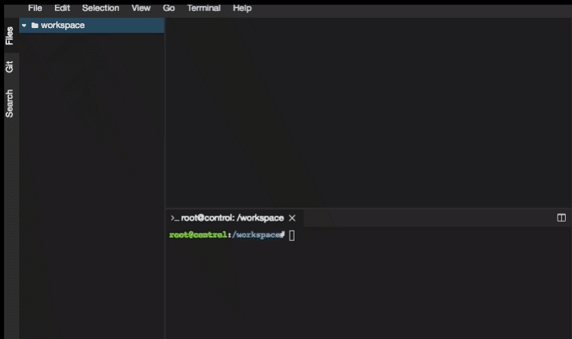

Setting up Codespaces IDE for Ansible
After installing Docker-Engine and Docker-Compose, change directory into the corresponding tool you want to setup the environment for.
cd cs-ansible
Then all you need to do is to run
docker-compose up -d
This single command will initialize your Codespaces IDE.
Use Codespaces IDE
To use Codespaces IDE,
- Open your browser.
-
Visit your machine's IP with port 8000. (Ex. http://192.168.0.60:8000 or http://localhost:8000)
-
Now you will be presented with the Codespaces IDE console.

Nodes Available

| Containers | Purpose | OS | Port Exposed | Host Port Mapped |
|---|---|---|---|---|
| control | Ansible | Ubuntu 18.04 | 8000 | 8000 |
| lb | Load Balancer | Centos 6.8 | 80 | 80 |
| app1 | App Server | Centos 6.8 | 80 | 81 |
| app2 | App Server | Centos 6.8 | 80 | 82 |
| app3 | App Server | Ubuntu 16.04 | 80 | 83 |
| db | Database | Centos 6.8 | 3306 | 3306 |
Adding Supporting Code
To help you with the learning process, we have prepared a git repository with the supporting code. In order to use this code, you need to open a terminal, and clone the code from github as follows,
- From menu, select Terminal -> New Terminal
- From inside the terminal, use git clone command as demonstrated below

git clone https://github.com/schoolofdevops/ansible-bootcamp-code.git
Managing Environment
Once created, you may want to stop the codespaces environment, or at times might have to recreate it completely, or reset a certain node. This section describes how to do so.
Stopping codespaces environment
If you would like to stop the environment created earlier, its as simple as the follows,
run the following from your codespaces directory
cd cs-ansible
docker-compose stop
The above command will shut down the containers/bring those to stopped state. You could easily start it all again, by running the following command from the same directory.
cd cs-ansible
docker-compose up -d
Resetting the nodes/environment
Since this is a docker based environment, its easy to rest a node, or even the complete environment.
To reset a node,
- Find out the name of the node from docker-compose.yml
e.g
control:
image: codespaces/ansible-control:v0.4.0
ports:
- "8000:8000"
volumes:
- ./code:/workspace
networks:
custom:
ipv4_address: 192.168.61.10
dns: 8.8.8.8
domainname: codespaces.io
hostname: control
restart: always
lb:
image: codespaces/ansible-node-centos-6:v0.3.6
ports:
- "80:80"
networks:
custom:
ipv4_address: 192.168.61.11
dns: 8.8.8.8
domainname: codespaces.io
hostname: lb
restart: always
In the above snippet of node, there are two nodes viz control and lb
You could alternately use the following command to find the node name
docker-compose ps
- Once you decide which node you are resetting, run the following command to redo it. I am taking an example of a node by name lb
e.g.
docker-compose stop lb
docker-compose rm lb
docker-compose up -d lb
Replace the name of actual node with lb. That should help you redo the node
To reset the complete environment,
docker-compose down
docker-compose up -d
The above command will recreate the nodes, without deleting your workspaces. Any files that you had created would still be available after you re launch the environment.